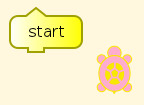
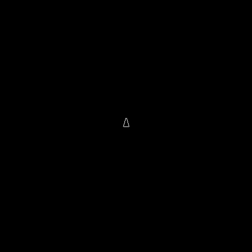
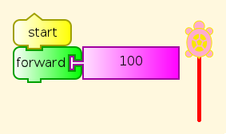
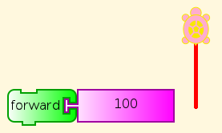
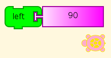
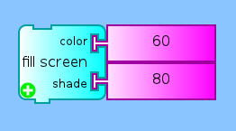

Turtle Art and Logo¶
Turtle Graphics comes from Logo, but Turtle Art (TA) is written in Python. However, you can save any TA program in Logo, even a single block, and examine the code or run it in Brian Harvey’s UCBLogo. Go to the Journal tab and look for Save as Logo, with a turtle icon.
This allows another perspective on Turtle Art blocks, giving fine details in some cases that are not obvious from experiment. So we can start to teach Logo to students who have even modest proficiency in Turtle Art, by constructing TA programs and saving as Logo, and then gradually moving to composing Logo with the TA code as examples. At the same time we can use the Logo translations to illuminate what TA is doing.
The ability to go from TA to Logo is important because there are many things about computer languages that are inherently not discoverable without lots of hints. For example, TA provides all of its blocks on palettes, so that you can’t miss any. In text-based languages, including Logo, you need to have a list somewhere outside the language interpreter. Even with all of the blocks in front of you, some are going to be mysterious. You don’t know how they do what they do, or you don’t even see them do anything at all unless you know what other block to use next. We discuss this further in The Undiscoverable. Of course, at some point, if you really want to know what is going on, you have to read the source code.
Having a path from TA to Logo is valuable because Logo is a much fuller programming language than TA. Although it is Turing-complete, which means that it could in principle compute any computable function, given enough space and time, it does not have many of the other capabilities of programming languages that can call external libraries, such as file handling and convenient UI design. Of course, you can do that in Python, and you can call Python from Turtle Art, but that isn’t the subject of this lesson.
Let’s see how it might start to work to learn Logo from TA, or use Logo to illuminate TA.
Logo Code for TA Blocks¶
start¶
A new TA session starts with just a start block. Click it, and nothing visible happens. (In older versions, you will have to get a start block from the Flow palette, the one with the two arrows going in a circle.

Any guesses as to what went on? Here you go.
window
to start
end
This says to open a display window, and then uses “to” to define a procedure named “start” with contents a blank line. The keyword “end” ends the definition. So we were right. The start block all by itself does nothing, but goes through a process to get that result.
Of course in TA we don’t open display windows, because one is always open. Here is what the window looks like in UCBLogo, with a triangle for the turtle.

Start-Forward¶
All right, it’s a start (haha) but that didn’t tell us a lot. Maybe this will help.

Well, that’s better. Now the procedure actually has content, and the content is exactly the meaning of the block we were looking at, forward 100. The only difference is the decimal point and following 0, meaning that this is a floating point value, not an integer. We don’t need that distinction in Turtle Art, which takes care of the conversion for us. Forward works fine with fractional distances, although you would have to lay down several different ones side by side to see the difference. We don’t need to know all about numeric types yet, for what we are doing in Logo.
window
to start
forward 100.0
end
No Start¶
So what happens if we leave out the start block? This happens.

Instead of a start procedure, our Logo program defines a procedure named turtleblocks_0. Otherwise, there is no difference.
window
to turtleblocks_0
forward 100.0
end
Left¶

No surprises.
window
to turtleblocks_0
left 90.0
end
SetBackground¶

Oh. A lot more goes on here. Turtle Art told Logo about how it handles colors. I won’t explain everything in detail, but let’s make a list of bits of Logo we haven’t seen yet.
for arguments to a function in the definition
“name is the name itself, not the value of the variable with that name
make to give a value to a variable
arithmetic including modulo (remainder on division)
ifelse condition [what to do]
first gets the first item from a list
butfirst drops the first item from a list
[data] makes a list
colors holds the numeric definition of the Turtle Art color palette
That’s more features than fit comfortably in teaching a lesson, but might not be too many in guided discovery over several sessions. With the hints given above, you should be able to see what every part of this Logo program is, but not necessarily how all of the parts fit together. That will require careful reading, including comparing definitions with their uses, and lots of experiments. For some learners, that’s the best part of all. For others, including many teachers, it is a useful lesson in tolerating your own ignorance while you seek to discover something you didn’t know. Anyway, we don’t have to require that everybody discover everything. Students can share discoveries, which is another particularly useful lesson in itself.
Once we get past those definitions, though, there is a procedure definition for tasetbackground, corresponding to the block we are testing. It is then called with the arguments 60.0 for color and 80.0 for shade, as we specified. And look! It’s blue!
window
to tasetpalette :i :r :g :b :myshade
make "s ((:myshade - 50) / 50)
ifelse lessp :s 0 [
make "s (1 + (:s *0.8))
make "r (:r * :s)
make "g (:g * :s)
make "b (:b * :s)
] [ make "s (:s * 0.9)
make "r (:r + ((99-:r) * :s))
make "g (:g + ((99-:g) * :s))
make "b (:b + ((99-:b) * :s))
] setpalette :i (list :r :g :b)
end
to rgb :myi :mycolors :myshade
make "myr first :mycolors
make "mycolors butfirst :mycolors
make "myg first :mycolors
make "mycolors butfirst :mycolors
make "myb first :mycolors
make "mycolors butfirst :mycolors
tasetpalette :myi :myr :myg :myb :myshade
output :mycolors
end
to processcolor :mycolors :myshade
if emptyp :mycolors [stop]
make "i :i + 1
processcolor (rgb :i :mycolors :myshade) :myshade
end
to tasetshade :shade
make "myshade modulo :shade 200
if greaterp :myshade 99 [make "myshade (199-:myshade)]
make "i 7
make "mycolors :colors
processcolor :mycolors :myshade
end
to tasetpencolor :c
make "color (modulo (round :c) 100)
setpencolor :color + 8
end
make "colors [
99 0 0
99 5 0
99 10 0
99 15 0
99 20 0
99 25 0
99 30 0
99 35 0
99 40 0
99 45 0
99 50 0
99 55 0
99 60 0
99 65 0
99 70 0
99 75 0
99 80 0
99 85 0
99 90 0
99 95 0
99 99 0
90 99 0
80 99 0
70 99 0
60 99 0
50 99 0
40 99 0
30 99 0
20 99 0
10 99 0
0 99 0
0 99 5
0 99 10
0 99 15
0 99 20
0 99 25
0 99 30
0 99 35
0 99 40
0 99 45
0 99 50
0 99 55
0 99 60
0 99 65
0 99 70
0 99 75
0 99 80
0 99 85
0 99 90
0 99 95
0 99 99
0 95 99
0 90 99
0 85 99
0 80 99
0 75 99
0 70 99
0 65 99
0 60 99
0 55 99
0 50 99
0 45 99
0 40 99
0 35 99
0 30 99
0 25 99
0 20 99
0 15 99
0 10 99
0 5 99
0 0 99
5 0 99
10 0 99
15 0 99
20 0 99
25 0 99
30 0 99
35 0 99
40 0 99
45 0 99
50 0 99
55 0 99
60 0 99
65 0 99
70 0 99
75 0 99
80 0 99
85 0 99
90 0 99
95 0 99
99 0 99
99 0 90
99 0 80
99 0 70
99 0 60
99 0 50
99 0 40
99 0 30
99 0 20
99 0 10]
make "shade 50
tasetshade :shade
to tasetbackground :color :shade
tasetshade :shade
setbackground :color
end
to turtleblocks_0
tasetbackground 60.0 80.0
end
Logo Code for TA Examples¶
This is the code generated for the examples in the Mathematics and Art tutorial for Turtle Art, with line breaks and indents added for clarity. Square and Squares are of little more difficulty than the Turtle Art they aer derived from. Flowers has a substantial section on handling colors in the manner of Turtle Art. The last three procedures, stack1, stack2, and start, are very similar to the stacks in the Turtle Art version.
Square program¶
window
to start
repeat 4.0
[ forward 100.0
right 90.0
]
end
Squares program¶
window
to start
clean
repeat 36.0
[ repeat 4.0
[ forward 300.0
right 90.0
]
right 10.0
]
end
Flower program¶
window
to tasetpalette :i :r :g :b :myshade
make "s ((:myshade - 50) / 50)
ifelse lessp :s 0 [
make "s (1 + (:s *0.8))
make "r (:r * :s)
make "g (:g * :s)
make "b (:b * :s)
] [ make "s (:s * 0.9)
make "r (:r + ((99-:r) * :s))
make "g (:g + ((99-:g) * :s))
make "b (:b + ((99-:b) * :s))
] setpalette :i (list :r :g :b)
end
to rgb :myi :mycolors :myshade
make "myr first :mycolors
make "mycolors butfirst :mycolors
make "myg first :mycolors
make "mycolors butfirst :mycolors
make "myb first :mycolors
make "mycolors butfirst :mycolors
tasetpalette :myi :myr :myg :myb :myshade
output :mycolors
end
to processcolor :mycolors :myshade
if emptyp :mycolors [stop]
make "i :i + 1
processcolor (rgb :i :mycolors :myshade) :myshade
end
to tasetshade :shade
make "myshade modulo :shade 200
if greaterp :myshade 99 [make "myshade (199-:myshade)]
make "i 7
make "mycolors :colors
processcolor :mycolors :myshade
end
to tasetpencolor :c
make "color (modulo (round :c) 100)
setpencolor :color + 8
end
make "colors [
99 0 0\
99 5 0\
99 10 0\
99 15 0\
99 20 0\
99 25 0\
99 30 0\
99 35 0\
99 40 0\
99 45 0\
99 50 0\
99 55 0\
99 60 0\
99 65 0\
99 70 0\
99 75 0\
99 80 0\
99 85 0\
99 90 0\
99 95 0\
99 99 0\
90 99 0\
80 99 0\
70 99 0\
60 99 0\
50 99 0\
40 99 0\
30 99 0\
20 99 0\
10 99 0\
0 99 0\
0 99 5\
0 99 10\
0 99 15\
0 99 20\
0 99 25\
0 99 30\
0 99 35\
0 99 40\
0 99 45\
0 99 50\
0 99 55\
0 99 60\
0 99 65\
0 99 70\
0 99 75\
0 99 80\
0 99 85\
0 99 90\
0 99 95\
0 99 99\
0 95 99\
0 90 99\
0 85 99\
0 80 99\
0 75 99\
0 70 99\
0 65 99\
0 60 99\
0 55 99\
0 50 99\
0 45 99\
0 40 99\
0 35 99\
0 30 99\
0 25 99\
0 20 99\
0 15 99\
0 10 99\
0 5 99\
0 0 99\
5 0 99\
10 0 99\
15 0 99\
20 0 99\
25 0 99\
30 0 99\
35 0 99\
40 0 99\
45 0 99\
50 0 99\
55 0 99\
60 0 99\
65 0 99\
70 0 99\
75 0 99\
80 0 99\
85 0 99\
90 0 99\
95 0 99\
99 0 99\
99 0 90\
99 0 80\
99 0 70\
99 0 60\
99 0 50\
99 0 40\
99 0 30\
99 0 20\
99 0 10]
make "shade 50
to taminus :y :x
output sum :x minus :y
end
to stack1
repeat 4.0 [ forward :box1 right 90.0 ]
end
to stack2
repeat 10.0 [ stack1 right 36.0 ]
end
to start
clean
make "box1 0.0
repeat 300.0 [
tasetshade taminus 100.0 :box1
tasetpencolor quotient :box1 3.0 stack2
make "box1 sum :box1 1.0 ]
end
See Also¶
Further Reading¶
Mindstorms: Children, Computers, and Powerful Ideas, by Seymour Papert. Where Logo and Turtle Graphics got started.
LogoWorks: Lessons in Logo, by Sheila Cory and Margie Walker
Teaching With Logo, by Molly and Daniel Watt
Advanced Logo, A Language for Learning, by Michael Friendly
Computer Science Logo Style, Second Edition, by Brian Harvey. Three volumes.
There are also many books on using Logo to teach various subjects, mostly in math.